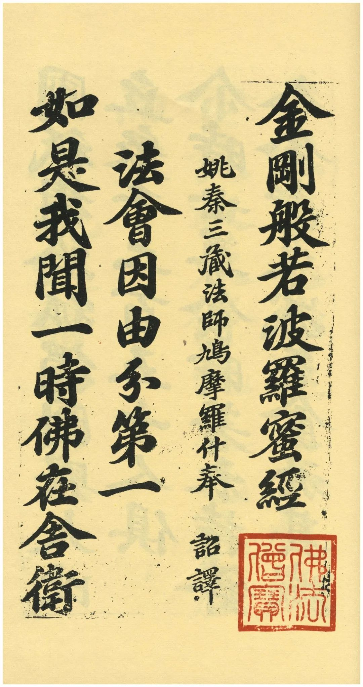
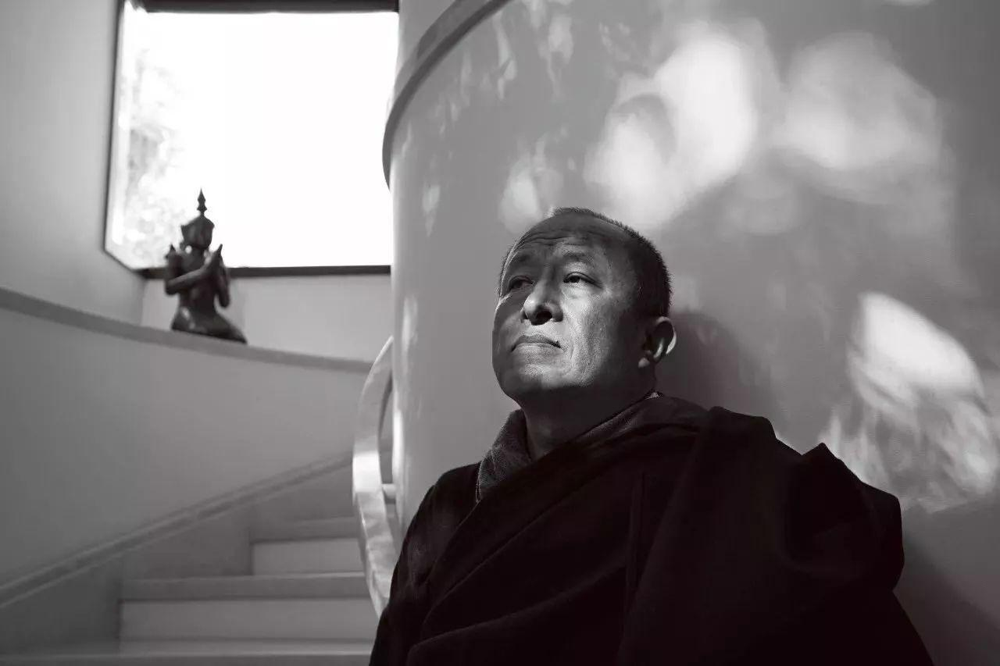

我们印象中最典型的智者，再进一步说圣人，往往是超凡脱俗的。所谓脱俗往往被认定为一种不食人间烟火，看破红尘，清心寡欲一心修行的状态。
而这些人身上最为大多数人所羡慕的，便是一种强大的精神力，以及一种豁达与洒脱。他们拥有能抵御混乱的智慧，他们平静且有真正的定力，不为他人这个地狱所左右。在这个焦虑与抑郁的功利性社会，我们都想脱离苦海，早悟兰因，不再为那些虚幻无常所奴役。于是我们把视线放在这些超脱的智者身上，试图通过模仿种种外相以求获得一些他们所拥有的平静。
然而这样的思维方式本就是错的。《金刚经》中说，"凡有所相，皆为虚妄"，而那些所谓不沾凡俗的戒律不正是这虚妄的相的一种吗？无端的压抑欲望只会导致更糟糕的放纵和崩溃的来临，因为这样做本末倒置了该有的逻辑：你首先拥有智慧与精神力量，然后你会发现凡世间那些多巴胺的化学反应从一种你苦苦追寻与乞求的东西，变为了你作为人仅仅的一种娱乐。就像偶尔的一块美味的点心，你会享受它带来的快感，却不会为了它而执着与痛苦，乃至蒙蔽了真正的自己。

所以真正的转变在于意识到一切的事物，一切你野心渴求与让你疯狂的，好似高不可攀或对你影响巨大的，本质上和你桌上喜欢吃的巧克力饼干没有任何的区别。这是一种放弃一切希望与渴望，不执着于任何事的看似绝望的自由，是"狂智"。
"修行的最终目的并不是你外在表现如何，其实你可以抽烟、打麻将、涂口红、染头发、甚至有男女朋友都没问题。
但最关键最关键的是'你不再被这些所迷惑，你不再执着这一切所呈现的幻相中'。
你应该绝对的放轻松，无论你的嘴巴是在接吻还是在念经，你都要记住这一切都不是究竟的表达，包括你认为的自己在内。
事实上只有真正做到不执着，你才能绝对的放松，你才能享受这一场关于「佛的游戏」。
这个"佛"就是你的心，这颗不被排挤不被遗忘，单纯而又坦诚的心。"
— 宗萨蒋扬钦哲仁波切

而那些所谓不落凡尘的人，更多是他们意识到了一些程度上的狂智，建立了精神的稳定后，那些花哨的事物便已可有可无了。他们真正的离自己很近，由于不再执着也就渐渐淡却了。
若你还在俗世，你应当认识到，你不该执着与疯狂于任何欲望，但你无法突然达到精神的转变。就像肌肉不会凭空的长出来，哪怕是某一时刻获得了巨大的enlightment，也需要通过时间的实践去将其真正转换为自己的力量。所以一开始就认为要隔绝所有，不再需要所有，这是错误的行为。你在压抑自己模仿智者的外相的同时，在精神上有任何的修行吗？若没有那最终的结果将是更具毁灭性的，你不过是在平白增加自己的痛苦。你应当欣然接受自己的欲望，不视其为应该断绝的洪水猛兽，而是一只待驯服的能够看家的猎犬。只需谨记也要控制，不能彻底放纵上瘾，以致堕落。在运营欲望的同时，尝试去平衡这些执着，从而让自己的智慧之数平稳的生长，抽空去读书，去修身，直到你能真正的控制与认识自己。
到那时，哪怕是放荡形骸还是清心寡欲，你都拥有了不被flow所操控的定与智。